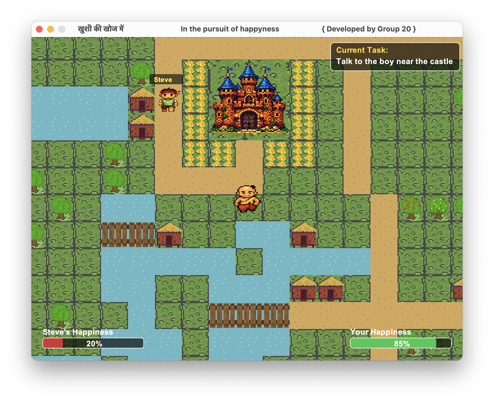

Step into the village of Tenali Rama and become the mind behind wisdom.
A child named Steve is believed to be suffering from deep sadness, and it is your
role to uncover the truth through observation, dialogue, and intellect.
Every choice matters. Every word holds meaning.
Requires Java (JRE 8+) to run